YAMADOGS
WARNING!
Yo pack! 🐾 Stay sharp and don’t sniff the wrong trail! ⚡
Only roam these official YAMADOGS paths:
🌐 https://yamadogs.org
🌐 https://yamadogs.github.io
Sniff-test time! 👃 Double-check the URL you’re on—if it ain’t one of these, don’t click or connect your wallet!
Mint price: 0.0005 ETH
Fully On-chain
YAMADOGS NFT
MAX SUPPLY
Loading... / 2026
 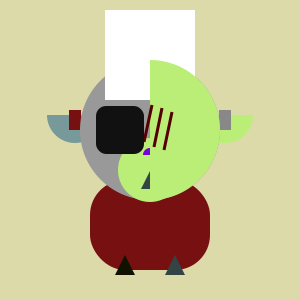
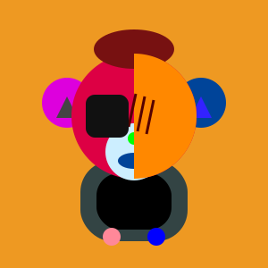
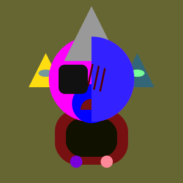
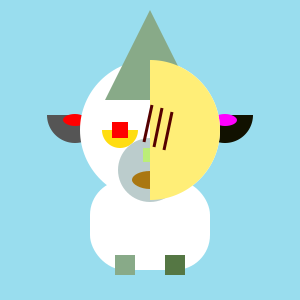
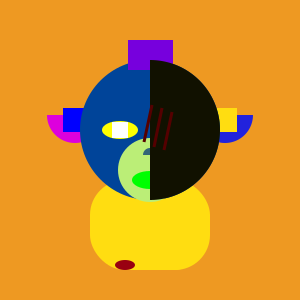
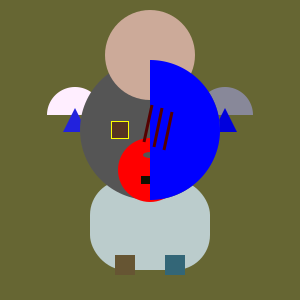
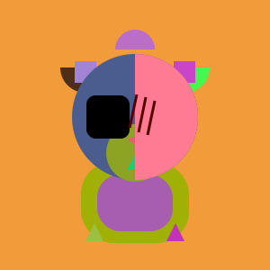
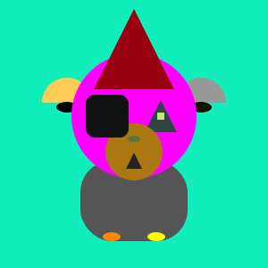
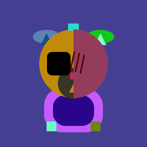
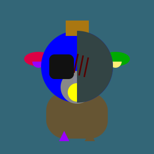
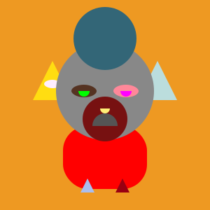
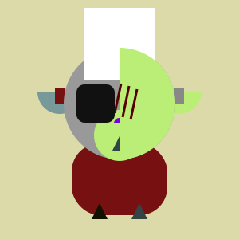
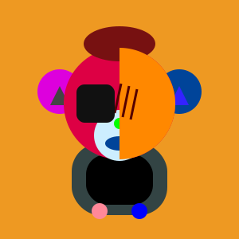
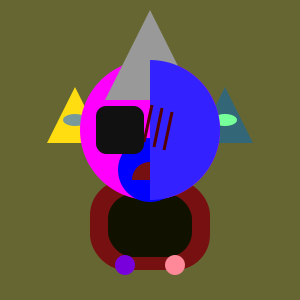
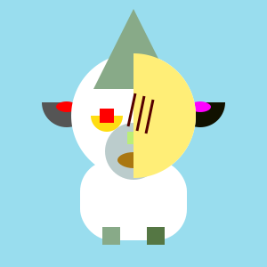
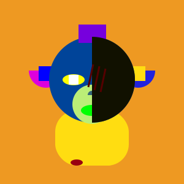
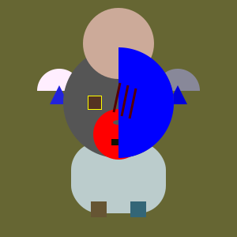
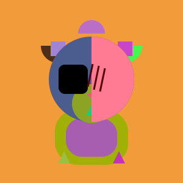
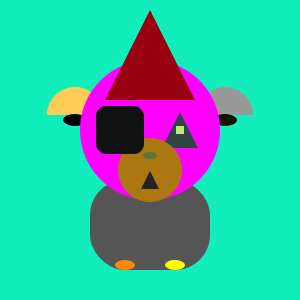
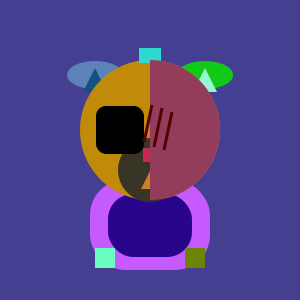
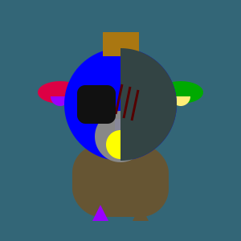
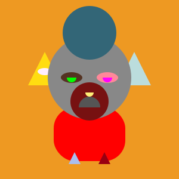
Images and metadata? Fully on-chain. Your YAMADOGS NFT lives entirely on the blockchain — no external storage, no IPFS, no central servers. Completely ownerless, admin-less… like a wild dog roaming free in the forest, owned by no one, keep by no one.
FAQ
You’re probably asking: “What’s the story behind YAMADOGS?”
Well… apparently everything needs a story these days, right? 😅
Honestly? Nothing fancy. I just love dogs. And when I create something, it’s gotta be my most loved and obsessed project—so obviously it had to be dogs.
Now, sure… there are already tons of dog NFTs out there. Same names, same vibes, same… blah blah blah. I didn’t want that. So I went on a quest: a noble, heroic, slightly obsessive quest to find a dog name that nobody else had claimed. 🕵️♂️🐶
It wasn’t easy. I scrolled, searched, and stared into the void of recycled dog names. 🤣
Then I stumbled upon a blog about an extinct Japanese dog breed called Yamainu. Ancient, mysterious… and kinda sad because they went extinct. Hmmmm… Japanese, I like it. Sad story… also kind of poetic. Life is harsh sometimes.
I thought about naming it Yamainu, but nah… someone might have already snatched that. Then I tried YAMADOG—but that’s a motorcycle brand 😎.
Finally, it hit me: my project isn’t a single dog… it’s a whole collection of dog art. Why not just call it YAMADOGS?
I searched. Nothing pops up. Zero. Nada. Perfect. And just like that… YAMADOGS was born. 🎉🐾
Creator
I’m the creator of YAMADOGS. You can call me Yami.
Where did I come from? You don’t need to know. 😉 I value my privacy, but I still wanted to build something real. That’s why YAMADOGS is fully ownerless and fully open-source. No admin. No control. No strings. Once it exists, it’s free to roam. Did I create this to make money? Maybe. Yeah. But honestly… I don’t even know if anyone will mint a YAMADOGS. 😂 I’m not famous. I’m not a known name in the NFTverse. So why collect something made by a nobody? Good question. Will YAMADOGS go mainstream? Probably not. But one thing is certain: I created YAMADOGS — and that will never change. Does YAMADOGS have something others don’t? On‑chain NFTs? Generative art? Decentralization? Blah blah blah. Let’s be real — none of that is new. Everything is a remix. I’m not special, and I won’t pretend to be. My only goal? For one real collector to notice the work. Even a single mint — if it comes from someone who truly appreciates it — is more than enough for me. I am nobody. My work might be worthless. But I put my heart and soul into creating YAMADOGS — and that part is real. 🐶
Download the YAMADOGS Logo: